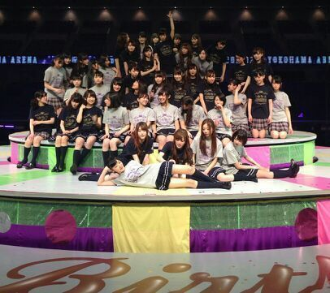
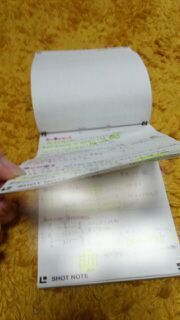

Hi ☆★☆ !!!
ろってぃ− ・ まいまい
皆さん こんにちわw
そして乃木坂46,２歳のお誕生日おめでとうございます。
皆ポーズとってない写真☆

はいっ、2/22 二日前の土曜日に横浜アリーナにて
乃木坂46の バースデーライブがありました！
来てくださったファン皆さんっ、本当にありがとうございました！そして スタッフの皆さんメンバーの皆も本当にありがとうございます！お疲れ様でした(*^.^*)
私たちは、ちょうど二年前の2/22に
『ぐるぐるカーテン』でデビューをし
それから 色々なことを経験し いっぱいいっぱい目の前にある壁とぶつかってきました。
リハーサルの時に 色んなことが頭によぎってきて涙が溢れ出しそうになり『ダメだダメだ、今はライブに集中して...』って自分に言い聞かせたり
本番始まる直前も 何かそわそわして不安でいっぱいでした。
そして、 横浜アリーナの中心 センターステージで
1万3千人を前に 1人で踊る日が来るなんて、、、
急遽 踊ることになりました.♪
本当に嬉しかったです！
幼い頃から 歌うことと踊ることが大好きな自分にとっては本当に夢みたいなことでした。
大きなステージで 数え切れないサイリウムの中で歌ってる、踊ってる姿を毎日毎日夢見ながら眠ってた頃を思いだしました。
『あれ？明日 本当に横浜アリーナで一人で踊るのか？』
って不思議な気持ちでいっぱいになりました。
本番も自分が何 踊ってたのかまったく記憶にないです*^^*
それに、全く知らなかった !!
アンコールで、 ゆみ姉とせっちゃんがステージに現れるなんて !!!
本当に嬉しかった 。 横花道から二人が登場してきた二人を見た瞬間 走って飛び付いて抱きついてる自分がいました。
今年は 全部で42曲披露致しました。
来年は 何曲になっているんだ ？
もはや 何時間ライブになるんだ？笑
来年は もっともっと大きなステージで歌いたい、躍りたい!!!!
ライブが終わったら 一気に緊張がとけて体の力が抜けました*^^*
そして昨日は１日いっぱい食べて いっぱい寝ました^^
今日から また気持ちを次に切り替えて頑張らなきゃです。
これは、ろってぃ−の ライブ用メモです！

メモ帳さん、最後まで使いきるから これからもよろしくね.(。・ω・。)/
ぢゃあねっ、 Rotty//